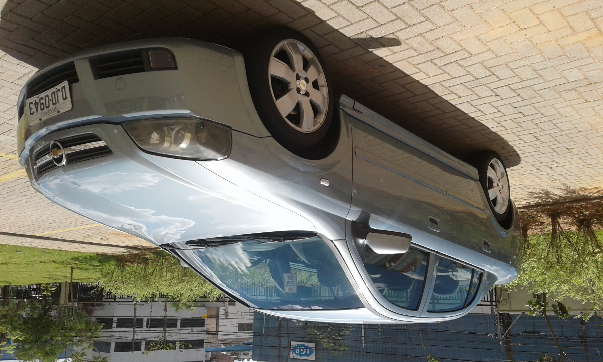

-

- modelo: astra
- ano: 2003
- Transmissao: Mecânica
- Opcionais: cinza, teto solar, banco de couro
- modelo: vectra
- ano: 2010
- Transmissao: Mecânica
- Opcionais: vermelho, vidro eletrico, Chave reserva
- modelo: civic
- ano: 2015
- transmissão: Automatico
- Opcionais: preto, gasolina, camera de ré